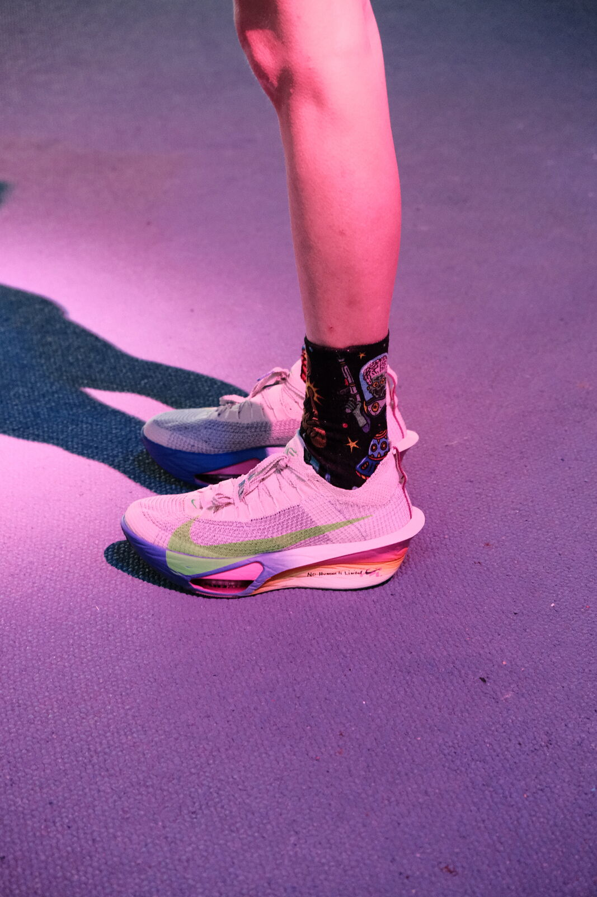
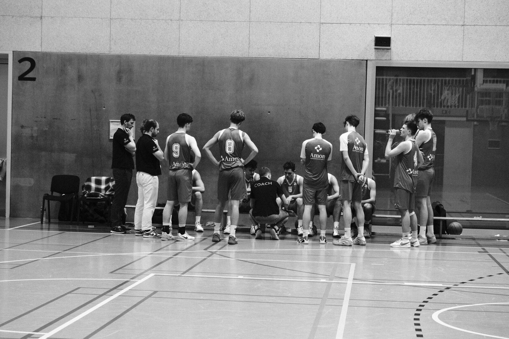
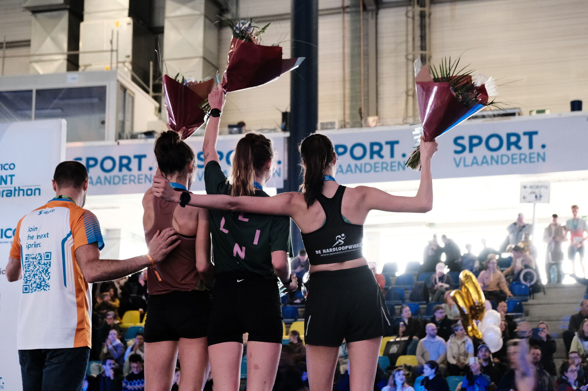
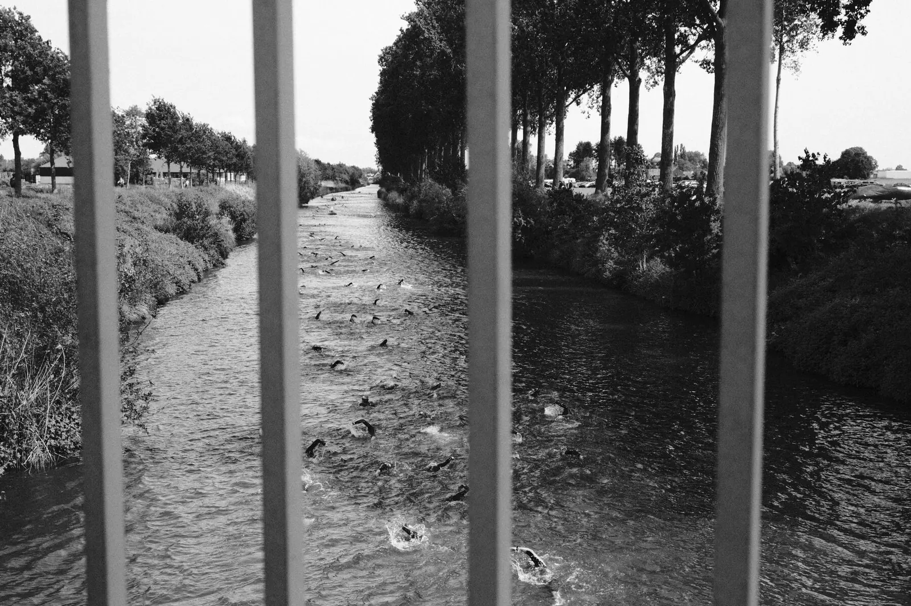

Services
What I offer
No standard programmes. We start from your starting line and build from there, step by step.
Individual support
One-on-one, at the practice, online or on the move. For athletes, performers and professionals, and for anyone looking for psychological support.
Performance
- Competition nerves, stage fright and fear of failure
- Injury, rehabilitation and the comeback
- Overtraining, recovery and burnout
- Perfectionism and self-confidence
- Identity beyond your sport or career
Psychological support
- Anxiety and worrying
- Low mood
- Trauma, with EMDR where appropriate
- Feeling stuck in your life or your work


Groups & teams
A team is more than the sum of its players. For sports teams, clubs, ensembles and organisations that want to work together on how they communicate, handle pressure and make each other better.
- Team dynamics and communication
- Handling pressure as a group
- Support and sparring for coaches and managers
- Training mental skills on the field or in the workplace
Workshops & talks
On request. Interactive sessions tailored to your club, federation, school, university or organisation.
- Handling pressure and fear of failure
- Motivation and goal setting
- Recovery, sleep and load capacity
- Mental well-being in and beyond sport or work

In practice
How it works
Introduction
A first conversation, with no obligations. We look at what is going on and whether we click. That last part is not a detail.
Plan
Together we set goals and choose an approach that suits you. Concrete and achievable.
Getting started
Sessions at the practice, online or on the move. We evaluate along the way and adjust where needed.

Sometimes you first have to swim against the current.
First step